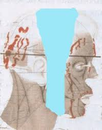

Otras reliquias
La Sindone de Turin tiene relacion con otras reliquias del cristianismo, que pudieron pertenecer a Jesucristo
Algunas reliquias fueron mencionadas previamente en la seccion forense, como el Sudario de Oviedo y la Cofia de Cahors
El Sudario de Oviedo es una tela de lino de 83 cm por 53 cm, y se encuentra en la ciudad de Oviedo, al norte de España desde el siglo VII . A comparacion con la Sindone no tiene imagen, solo manchas de sangre mezclada con liquido pulmonar, pero que en su morfologia corresponde a una cabeza humana y comparte similitudes con la Sindone de Turin. El grupo sanguineo del Sudario es el AB, el mismo que el de la Sindone

Esta tela tuvo un recorrido distinto al de la Sindone, pero tienen en comun que procedian de Jerusalen, segun los restos de polen encontrados
El Velo de Manoppello es una tela de 17 cm por 24.5 cm, hecho de biso marino, donde esta la imagen de un hombre maltratado pero vivo. La imagen se puede apreciar en ambas caras del lienzo y puede tener distintos efectos visuales segun la direccion de la luz.
El Velo como se aprecia hoy en dia
El Velo despues de pasar una "restauracion" digital realizado por Liberato De Caro, Emilio Matricciani y Giulio Fanti
El rostro del Velo de Manoppello y el rostro de la Sindone tiene puntos de coincidencia que se puede pensar que pertenecio a la misma persona en dos momentos diferentes: en vida y muerto

La Cofia de Cahors es una tela de lino egipcio que debio servir para cerrar la mandibula de Jesus en el sepulcro. Esta tela esta impregnada de sangre, y todavia queda pendiente compararla con la sangre de la Sabana Santa. Se encuentra en la ciudad de Cahors, Francia, desde hace casi 900 años
La Tunica de Argenteuil es una tunica de lana con manchas de sangre del grupo AB. La tunica ha sido comparada con las heridas de la flagelacion de la imagen dorsal de la Sindone. La tradicion cristiana indica que es la tela incosutil de Jesus a la que segun el Evangelio fue echado a suertes por los soldados romanos